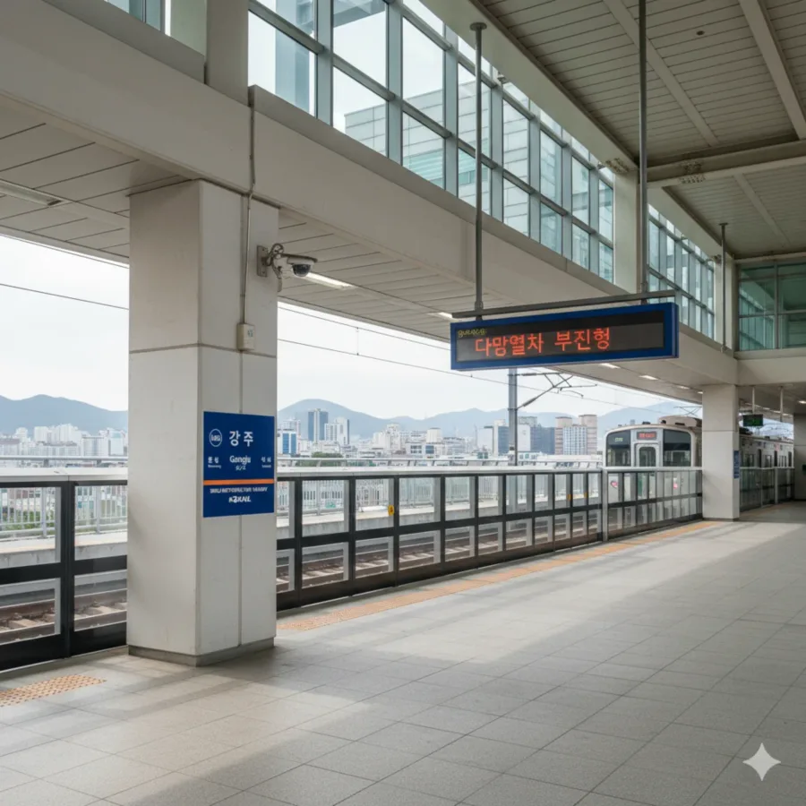
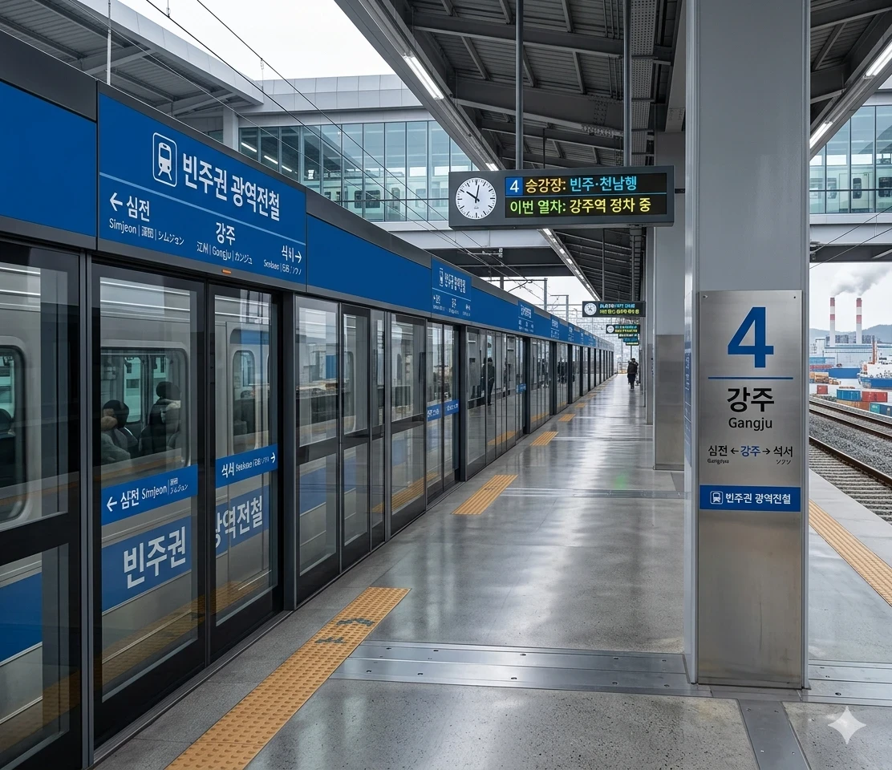

덕빈북도 서남부의 중심, 강주시의 관문.
덕빈북도 강주시 과탐동에 위치한 강빈선과 빈주광역철도의 철도역이다.
인구 25만 강주시의 중앙역으로, 이 역을 지나가는 모든 ITX-새마을, ITX-마음, 무궁화호 열차가 얄짤없이 필수 정차한다. 강주시청 별관과 복합환승센터가 찰싹 달라붙어 있어 교통과 행정의 중심지 역할을 톡톡히 수행하며, 빈주광역철도 개통 이후 빈주시와의 연계성이 미친 듯이 크게 강화되었다.
1989년 4월 18일 강빈선 개통과 함께 영업을 개시하였다. 당시에는 무궁화호 등 일반열차만 이따금씩 들어오는 역이었으나, 강주시의 폭발적인 성장과 함께 이용객이 야금야금 증가하였다.
이후 2017년 5월 10일, 빈주광역철도이 개통되면서 전동열차가 운행을 시작하였고, 이에 맞춰 구닥다리 역사를 갈아엎고 선상 역사로 대대적인 증축 공사를 단행했다. 현재 고속철도는 들어오지 않아 고속철도 타려면 계성역이나 빈주역까지 튀어가야 하는 설움이 있지만, 향후 KTX/SRT 정차를 대비해 승강장 확장이 가능한 폼으로 미리 깔아놓은 상태다. 존버는 승리한다

지상 3층 규모의 선상 역사로, 2면 4선의 쌍섬식 승강장 구조를 띠고 있다. 일반열차와 광역전철이 같은 승강장을 쓰지 않고, 내선(2, 3번선)은 일반열차가, 외선(1, 4번선)은 광역전철이 사용하는 전형적인 방향별 복복선 스타일의 아름다운 구조를 취하고 있다.

| 풍영 방면 ↑ | |||
| 상행 (2) | ㅣ | ㅣ | 하행 (3) |
| ↓ 곡전 방면 | |||
| 2 | 일 강빈선 (일반) | 효빈 · 서울 방면 |
| 3 | 일 강빈선 (일반) | 빈주 · 반양 방면 |
| 심전 방면 ↑ | |||
| 상행 (1) | ㅣ | ㅣ | 하행 (4) |
| ↓ 석서 방면 | |||
| 1 | 광역 빈주광역철도 | 강주항 방면 |
| 4 | 광역 빈주광역철도 | 빈주 · 천남 방면 |
| 연도 | 일반열차 | 광역전철 | 총합 | 비고 |
|---|---|---|---|---|
| 2016년 | 5,500명 | - | 5,500명 | 광역전철 개통 전 |
| 2017년 | 6,021명 | 8,540명 | 14,561명 | 5월 10일 광역전철 개통 |
| 2019년 | 7,532명 | 14,210명 | 21,742명 | |
| 2020년 | 4,210명 | 9,850명 | 14,060명 | 코로나19 여파 |
| 2022년 | 6,890명 | 16,520명 | 23,410명 | 수요 회복세 |
| 2024년 | 8,500명 | 20,923명 | 29,423명 | 강주시 1위 |
광역전철 개통 전까지만 해도 하루 5천 명 남짓 이용하는 평범한 일반철도 역이었으나, 2017년 빈주광역철도이 뚫리면서 그야말로 이용객이 폭발했다. 빈주시로 출퇴근하는 강주시민들의 수요를 블랙홀처럼 빨아들이며 단숨에 일평균 3만 명을 바라보는 강주시 제1의 교통 허브로 떡상했다. 물론 빈주역이나 장기역 같은 괴물들과 비교하면 아직 아기 수준이다